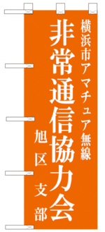
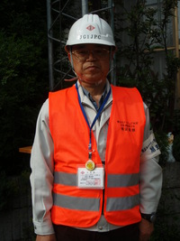
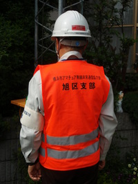

当会について
横浜市アマチュア無線非常通信協力会･旭区支部（JR1YWK) は本部を旭区役所に置き、防災協力機関として旭区防災組織に組み入れられています。 非常災害時にはアマチュア無線を使用し、 ボランティア精神を持って情報伝達に協力することを目的としています。
横浜市アマチュア無線非常通信協力会・旭区支部紹介資料旭区役所との通信網の運営に関する協定
横浜市旭区と横浜市アマチュア無線非常通信協力会旭区支部との間で運営に関する協定が結ばれており、 災害時の協力要請、 通信の統制、 無線設備などについて規定されています。
規約
旭区災害非常無線通信網の運営に関する協定災害時非常無線通信の協力に関する協定（横浜市アマチュア無線非常通信協力会）
横浜市アマチュア無線非常通信協力会規約
非常通信協力会・旭区支部 規約
選挙管理規定
会員証細則
支部の表示・認知方法について
のぼり旗
旭区役所から本会のノボリ旗を提供されました (幅 60cmｘ高さ 80cm)。 各拠点に配布され、訓練等で所在を示すために使用します。
活動場所に掲示することで、本会の活動であることが説明できます

拠点用ベスト
各防災拠点において、支部員であることを標識する「ベスト」を旭区役所より支給されています。 拠点に 1 枚づつ配布されますので、各拠点で適切に管理願います。


腕章
会員に配布されます。活動の際には着用してください。適切に管理してください。
会員証
会員に配布されます。活動の際には着用してください。適切に管理してください。